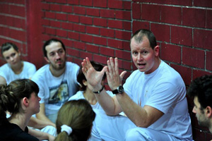

Mestre Steen – первая ласточка европейских мастеров
 Помнится, зашел у нас еще на raizes da capoeira разговор о том, что бразильцы никогда не дадут статус мастера европейцу. Кто-то даже разыскивал среди мастеров хоть кого-то небразильского происхождения, но не нашел. С тех пор прошло достаточно много времени, возможно, мастера-небразильцы уже давно никого не удивляют. Но я впервые увидела такого мастера в Сербии, на известной уже всем моими стараниями Semana da Cultura Brasileira 2011. С удовольствием рассказываю вам историю Mestre Steen – мастера родом из Дании.
Mestre Steen (Steen Moller) с самого детства оказался погружен в бразильскую культуру – его семья жила в мультикультурном районе Копенгагена, где со всех сторон играла самба и боссанова. Первое, что освоил Steen – бразильские инструменты, музыку и слова самбы. После многих лет увлечения латинскими ритмами, Steen решил съездить в Бразилию. Там, в одной из фавел Рио он увидел капоэйру и пропал. Довольно приличное время Steen прожил в Бразилии, тренируясь у профессоры или контраместры (факт, что у женщины) какой-то группы капоэйры. К сожалению, ученик mestre Steen’a, который рассказал мне эту историю, не смог назвать имя этой группы. Возможно, она вообще больше не существует, эта группа, но что нас интересует – что это точно была не Capoeira Senzala.
Steen вернулся в Данию, вдохновленный капоэйрой, открыл свою группу и начал преподавать.
В 1991 году Steen снова уехал в Бразилию, где произошла очень важная для него встреча – знакомство с Mestre Peixinho, главой школы Centro Cultural Senzala de Capoeira. С этого года Steen Moller вступил в группу Сензала и стал постоянно ездить в Бразилию и приглашать Mestre Peixinho в Данию.
Здесь придется немного залезть в личную историю мастера и упомянуть, что он в совсем юном возрасте лишился отца, и неожиданно нашел его… в mestre Peixinho. Они виделись каждый год, очень тесно и близко общались, и Steen всегда говорил, что Peixinho ему как отец. Конечно, он полностью принял капоэйру своего мастера, с уважением продолжая его линию. Он просматривал все доступные видеозаписи, изучая стиль Peixinho, не копируя слепо его игру, но стараясь понять логику, характер и технику этой игры.
В 2008 году Steen получил титул контрамастера и коричневый шнур. Здесь важно сказать, что в Сензале два уровня контрамастера: первый отмечается коричневой кордой, второй – красно-желтой.
В 2010 году здоровье mestre Peixinho очень серьезно ухудшилось, и Steen собирался к нему в Бразилию, чтобы навестить своего наставника и друга, возможно, в последний раз. На большой батизаде в Дании, где присутствовали многие мастера, тайком от Steena сензальцы собрали для него деньги на билет в Бразилию – представьте пронзительность момента. К сожалению, Steen не успел – 16 мая 2011 года Mestre Peixinho ушел из жизни, а его ученик даже не смог приехать проводить его в последний путь – вместо этого ему пришлось поехать на батизаду своей группы в Сербию, что, как утверждают наши сербские друзья, свидетельствует о его высочайшем профессионализме, который он перенял от Peixinho.
Теперь мне снова придется залезть в личную жизнь – на этот раз Mestre Peixinho. Может, не все знают, но у него был выбор – угасать долго и мучительно – или самому выбрать день ухода из жизни. Мастер выбрал второй вариант, поэтому у него было время подготовиться, попрощаться со всеми и оставить на прощание свои мысли и пожелания. Одним из его последних желаний было дать Steen мастерский пояс. Воля главы школы. Неизвестно, скрежетали ли зубами бразильцы, но в июле 2011 года Steen, пропустив одну степень контрамастера (тот самый красно-желтый пояс, о котором шла речь выше), стал первым небразильским мастером в школе Centro Cultural Senzala de Capoeira.
Помимо групп в Дании, mestre Steen курирует группы в Уганде (!) и Сербии.
Его сербский ученик Nenad Jović (Diablo), который рассказал мне всю эту историю, говорит о своем мастере очень уважительно:
Мне повезло попасть на одну тренировку от Mestre Steen, и от себя я могу сказать, что меня поразило его внимание к деталям, его тщательность в объяснениях, скурпулезность в мелочах. Кстати, одна из фишек Сензалы, секрет ее стиля – os passos – маленькие шаги, перемещения, постановка ног после ударов в те или интые позиции, едва заметные мелочи, которые в итоге создают стиль игры. Этому невероятно сложно научить – проще показать акробатику, поставить удары, обучить уходам, но Mestre Steen учит именно этому. С ним в разы проще, чем с бразильцами – он дает четкие ответы на вопросы, не абстрактные, но конкретные, понятные нашему складу ума, нашему менталитету. Возможно, он не очень-то вдохновит вас своей игрой на видео, но лично у меня уважения к этому датскому мастеру больше, чем ко многим летающим в Роде лихим парням с горячей кровью do Brasil.
I thank my Serbian friend Nenad Jović (Diablo) for his sincere story about Mestre Steen. I wish you all the best!
Muito Axe!